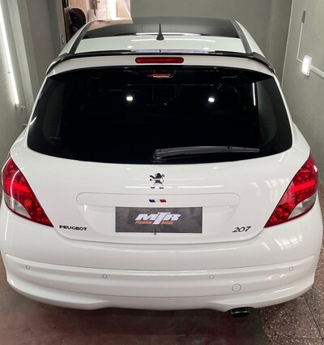
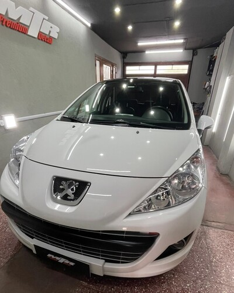
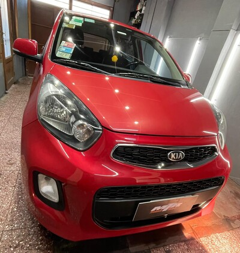
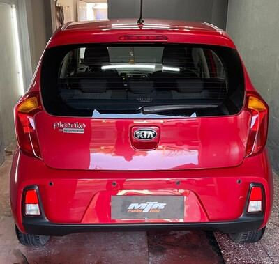
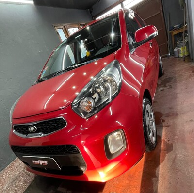
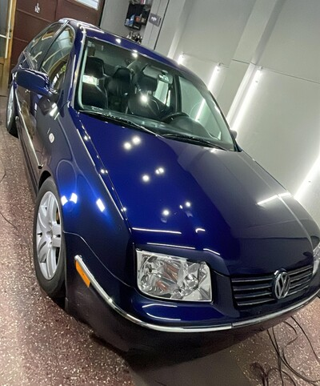
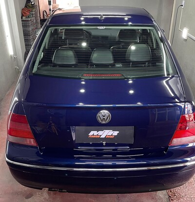
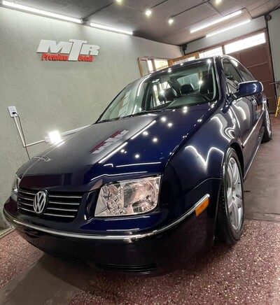

CONOCÉ NUESTROS TRABAJOS.
Tratamientos y abrillantados.
Existen tres tipos de tratamientos. Acrílico, cerámico y vidrio líquido. Su diferencia consiste en la dureza, repelencia y tiempo de protección. El acrílico cuenta con una dureza de 4H y protección de 6 meses. En tanto, el cerámico y vidrio líquido otorgan una dureza 9H con más de 12 meses de protección, destacándose el sellador vidrio líquido por su alto poder hidrofóbico y terminación brillosa. Los tratamientos se utilizan en vehículos 0km y usados, protegiendo de contaminantes ambientales como resina, heces de aves y agua dura o lluvia acida, evitando que se impregnen en el barniz del vehículo. Nuestros abrillantados son recomendables a la hora de vender tu vehículo ya que recupera el brillo y mejora la estética. Se realiza un paso de pulido con pulimento de corte medio y brillo de alto rango. No posee sellador por lo que no tendra repelencia ni protección.
Vidrio líquido

Sonax CC ONE
Peugeot 207 GTI
Abrillantado
3 pasos
Kia Picanto
Vidrio líquido
Sonax CC ONE
Volkswagen Bora
Limpieza de tapizados e interiores
Nuestro servicio se basa en limpiar y desinfectar cada elemento del interior de tu vehículo, eliminando manchas y olores, descontaminando con vapor todas las superficies e incluso los conductos del aire acondicionado. Protegemos los plásticos con emulsión sin silicona para prevenir que el sol, con el tiempo, vaya dañando el material, resecándolo y haciendo que pierda su aspecto a nuevo. Aplicación de acondicionador de cueros para evitar quiebres y decoloración del mismo.